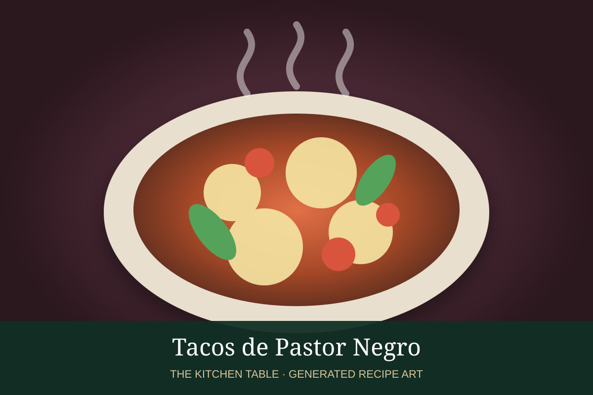

← Back to all recipes
PORK · MEXICAN
Tacos de Pastor Negro
A dark, smoky variation on al pastor made with toasted chiles, achiote, and charred aromatics.
1 hr + marinateMakes 12–16 tacos

Photo: Wikimedia Commons
Ingredients
- 2 lb pork shoulder, thinly sliced
- 4 guajillo chiles
- 2 pasilla chiles
- 1 ancho chile
- 1/2 charred onion
- 4 charred garlic cloves
- 2 tbsp achiote paste
- 1/4 cup pineapple juice
- 1/4 cup vinegar
- Oregano, cumin, salt
- Tortillas, pineapple, onion, cilantro
Preparation
- Toast chiles deeply without burning and soak until soft.
- Blend with charred aromatics, achiote, pineapple juice, vinegar, spices, and salt.
- Marinate pork at least 4 hours.
- Grill or broil until deeply caramelized.
- Chop and serve with pineapple, onion, cilantro, and lime.